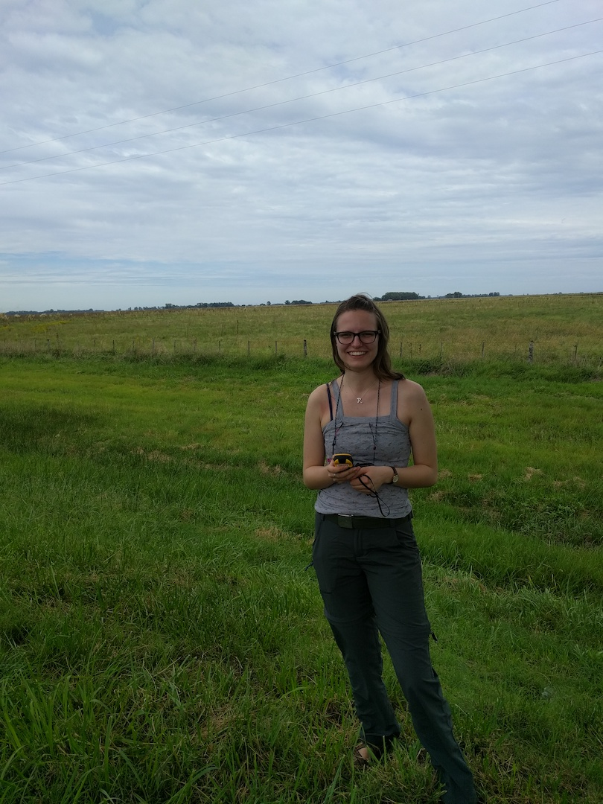

I am a PhD Candidate at the Department of Earth and Environment at Boston University and a member of the Land Cover and Surface Climate Group.
I study climate variability and human transformation of the landscape, especially through agriculture. I use high performance computing, machine learning and time series analysis of remote sensing observations to characterize land use and land cover change. 